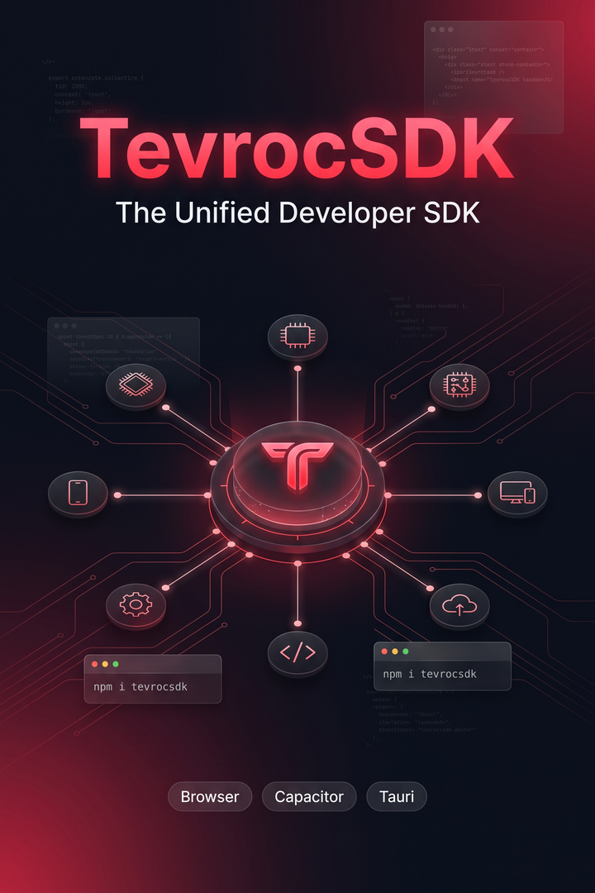
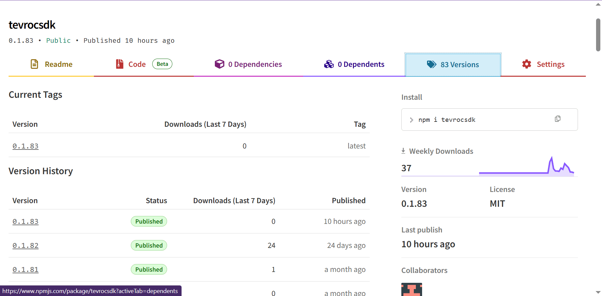

npm package · developer tool
Tevroc SDK
A unified JavaScript client for Tevroc worker APIs. Build authentication, entity CRUD, files, integrations, payments, native persistence, and offline sync into your own web, Capacitor, or Tauri application.

Install
npm install tevrocsdkA package your app imports
Tevroc SDK is not a standalone desktop or mobile app. It is a published npm dependency that your application installs and imports. Your web, Capacitor, or Tauri host supplies the platform shell while the SDK keeps API access, auth, data, files, integrations, and storage patterns consistent.
Package at a glance
- Current package: 0.1.83
- Distribution: public npm registry
- License: MIT
- Runtime: browser, Capacitor, and Tauri environments
- Release history: versioned npm package releases

What the SDK gives developers
Authentication
Reusable auth flows and current-user access.
Entities
Consistent CRUD patterns for application data.
Files and offline
File handling, caching, native persistence, and sync helpers.
Integrations
A shared client surface for connected Tevroc services.
Payments
Application-side payment patterns through one client.
Native bridges
Works alongside Capacitor and Tauri capabilities.